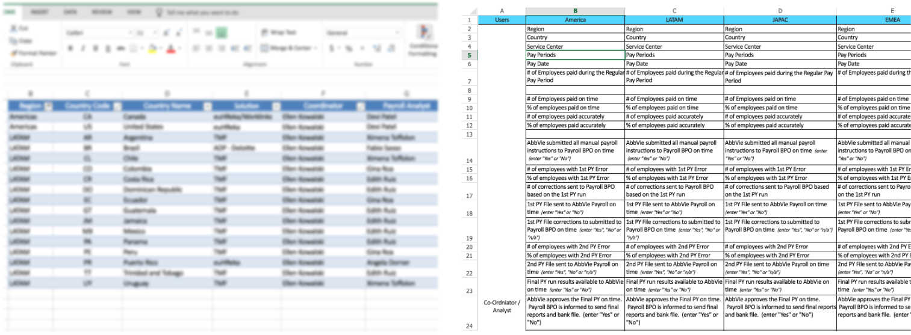

The client, a pharmaceutical company that develops and markets both biopharmaceuticals and small molecule drugs, headquartered in North America, wanted a simple solution to manage their payroll system. Their current payroll structure was being handled in a disjoint process: them and a third-party vendor. The records were maintained in an excel format and was difficult to track. They had many cases where the payroll structure did not work out, such as, failure to pay employees on-time/ payment of less salary to some employees.
To understand the problem statement, I had a few contextual inquiries with the onsite team. With the help of the onsite coordinator, I was able to get a full understanding of the problem. As the application would be accessed in different locations where fields would vary, I classified the KPI’s in order of regions and user group that would have access to the information. Post an approval from the client, I started the design process.
As before , I had complete room to ideate/conceptualize and structure a proper workflow process. There were a few challenges in identifying and defining the user journeys as there were two sets of user groups performing the same task. Post definition, I conceptualized and designed the screens (low-fi wireframes). Post design, showcased solution to the clients who found the new process easier and intutive as I envisioned a Dashboard to help classify the user tasks according to KPI definition. Delivered a complete interaction design workflow.
Microsoft Excel, Word, Powerpoint
Initially I had discussions with the client to understand the business requirement. Post requirement gathering, To maximize my knowledge on the workflow I had several key discussions and interviews with the all the user groups. Once I understood what their everyday function was, I mapped out the process along with region specifications and user groups. This helped me in identifying a better process flow that would enable the users to have a more visible view on their tasks and increase their productive effort. Once my process flow was approved I proceeded to the design phase.
As a designer, it is easy for us to come up with so many representations for a use case. Understanding your audience is the key for a good designer! In this project, the user groups were used to performing their operations in a grid approach, therefore, in order for not making a huge learning curve, I ensured that I followed a pattern where the user would feel that they are working on a platform that looks and feels new but somehow familiar.